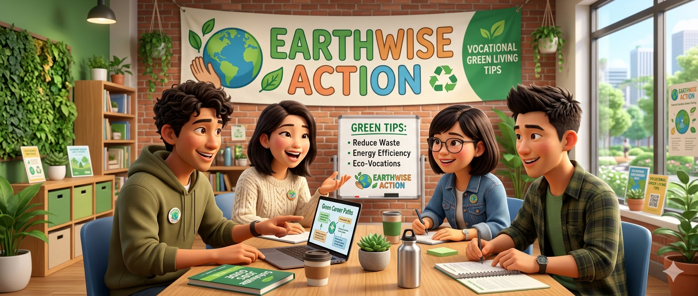

You are on the public relations team of Earthwise Action, a non-profit organisation working to protect the environment. The organisation is going to host a workshop to educate the public about green living. You and your colleagues are going to hold a meeting to discuss the arrangements for the workshop. You should:
As a group, you must cover all the agenda items below.
Possible practices to cover:
Souvenirs for participants
This agenda item will be revealed at the assessment venue in the EAII.
Possible souvenirs:
Sample meeting video — EAII Practice 2: Earthwise Action workshop planning.